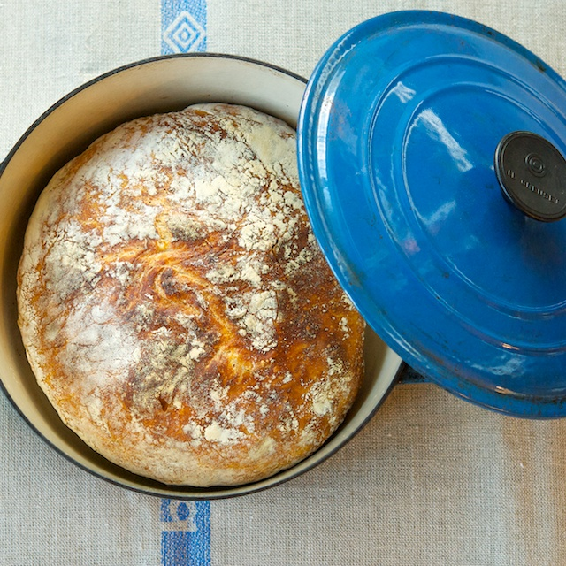

No Knead Bread

This bread is sensational. It's the easiest loaf and the most consistent bread I've ever made. It's better than any bread from a supermarket and better than 90% of bakeries out there. It's take a long time to prove, but is worth the wait.
Serving: 1 loaf
Preperation time: 5 minutes
Cook time: 45 minutes
Idle time: 18 hours
Ingredients
- 3 cups of strong bread flour
- 1 1/2 cups of water
- 1/4 teaspoon of yeast
- 1 1/4 teaspoons of salt
Steps
- Mix all the dry ingredients together in a large bowl using a fork or a wisk. Slowly add the water and mix to form a dough.
- Cover and wait for 18 hours!
- Remove the dough from the bowl onto a floured surface. Fold a couple of times to make a seam and make sure the dough is seam-side down. Coat with more flour and cover the dough with a tea towel for 2 hours.
- Preheat the over to very hot for about 30 minutes. Place a deep ceramic or cast iron pot with a lid in there to preheat, too.
- Dump the bread into the pot seam-side up and put into the oven with covered.
- After 30 minutes, remove the lid and bake for another 10 - 15 minutes until toasty brown.
- Leave the bread to rest on a wire rack and listen to the bread sing.